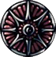
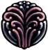
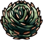
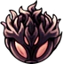

O que são encaixes de amuleto?
Os Encaixes de Amuletos são necessários para equipar os Amuletos. Amuletos diferentes exigem um número diferente de Encaixes. O Cavaleiro começa com 3 Encaixes. Mais 8 podem ser encontrados durante o jogo, totalizando 11 Encaixes. cada amuleto nescecita de uma quantidade de encaixes sendo de um encaixe até cinco encaixes sendo que o que precisa de cinco é um amuleto especial. e tambem um que não custa Encaixes.

Para que servem os Amuletos?
Os amuletos em Hollow Knight são acessórios especiais que oferecem vários bônus e habilidades especiais ao jogador. Eles são equipados utilizando encaixes, e só podem ser equipados e desequipados enquanto o jogador estiver sentado em um banco. Além disso, existe um estado chamado “Sobrecarregado”, que permite ao jogador equipar um amuleto que requer mais encaixes do que os disponíveis. No entanto, isso faz com que o dano recebido pelo jogador seja dobrado. Portanto, os amuletos servem para personalizar e melhorar as habilidades do jogador, permitindo diferentes estratégias e estilos de jogo. No entanto, eles devem ser usados com cuidado, pois a escolha e combinação de amuletos podem afetar significativamente a dificuldade e jogabilidade do jogo
amuletos existentes no jogo
| amuletos | funçoes |
|---|---|
|  Bússola caprichosa |
Sussurra sua localização ao portador sempre que o mapa estiver aberto, permitindo que os aventureiros identifiquem sua localização atual. |

Enxame de colecionadores |
Um enxame seguirá o portador e coletará quaisquer Geo deixado no chão. Útil para aqueles que não conseguem deixar nada para trás, por mais insignificante que seja. |
| 
Corpo firme |
Mantém seu portador firme, prevenindo-o de recuar quando atingir um inimigo com o Ferrão. Permite que se mantenha firme e continue atacando. |
| 
Espinhos da agonia |
Sente a dor do seu portador e ataca o mundo ao seu redor. Quando dano é recebido, brotam-se vinhas espinhentas que machucam inimigos próximos. |
| 
Fúria dos Caídos |
Incorpora a fúria e o heroísmo que vem sobre aqueles que estão prestes a morrer. Quando próximo da morte, a força do portador irá aumentar |
|
insignia do defensor |
Amuleto único concedido pelo Rei de Hallownest ao seu mais leal cavaleiro. Gasto e sujo, mas bem cuidado. O portador irá emitir um odor heróico(o personagem ira ficar soldando uma novem toxica que da dano aos inimigos). |
|
canção das larvas |
Contém a gratidão de larvas que foram salvas. Recebe ALMA sempre que dano for recebido. |

Elegia da Larvamosca |
Contém a poesia das larvas que evoluíram para o próximo estágio de suas vidas. Infunde armas com uma energia sagrada. Quando o portador está com a vida cheia, ele lançará feixes de energia branca através de seu ferrão. |
Fato curioso sobre Hollow Knight
Você sabia que o personagem principal de Hollow Knight foi retirado de um projeto anterior da Team Cherry chamado Hungry Knight, que foi realizado em menos de 48 horas em um encontro de desenvolvedores? Isso é um exemplo interessante de como as ideias podem evoluir e se transformar ao longo do tempo! 😊
Top runners
em primeiro 1°lugar skate king com 31m 24s de LRT(load removed time)
video no qual ele alcançou 1°lugar
Caso queira ver diretamente no Youtubeclique aqui
já em 2°lugar temos lep com 31m 39s de LRT
video no qual ele alcançou 2°lugar
e por ultimo mas não menos importante temos jackmanmarcus com 31m 46s de LRT
video no qual ele alcançou 3°lugar
Caso queira ver diretamente no Youtubeclique aqui